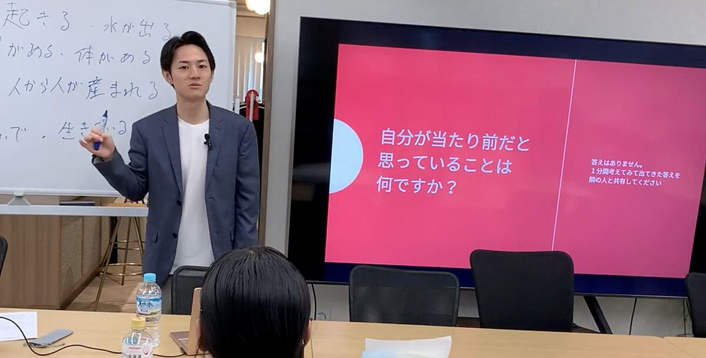

鑑定について
自分のことを知る、
90分。
特別な準備はいりません。今、悩んでいることがまとまっていなくても大丈夫です。
90分の流れ
90分で、
何をするのか。
Zoomで、林竜輔と1対1で話します。一方的に聞くだけの時間ではなく、あなたの仕事や人間関係の話を伺いながら進めます。
- 0分
鑑定スタート（Zoom・1対1）
- 01
算命学を知る
まず、私が算命学をどう見ているのかを簡単にお伝えします。
- 02
生年月日から、宿命を確認する
あなたの生年月日と性別から、生まれ持った傾向を確認します。
- 03
今の状況と照らし合わせる
仕事、人間関係、これからの生き方など、今抱えていることを伺います。まだ言葉になっていなくても構いません。
- 04
話しながら、これからを考える
伺った内容に合わせて、生まれ持った傾向をこれからの選択にどう使えるかを、一緒に整理します。
- 90分
鑑定おわり
- 05鑑定後
鑑定書を受け取る
鑑定の内容をまとめたPDFの鑑定書を、あとからお渡しします。
鑑定で分かること
生年月日から、
何が分かるのか。
- どんな人なのか
- 自分では当たり前だと思っている強みに気づく。
- 考え方や行動のクセ
- なぜ自分はそう考えてしまうのかが分かる。
- どんな環境で力を発揮しやすいのか
- どんな人・仕事・環境だと力を発揮しやすいかが分かる。
- 何を大切にする人なのか
- 選択に迷ったとき、何を基準にすればいいかが分かる。
- これから何を選ぶのか
- 自分の宿命を知ったうえで、これからどう選んでいくのかを考える。
鑑定書
鑑定は、
その日だけで終わりません。
鑑定でお伝えしたあなたの宿命は、PDFの鑑定書としてお渡しします。一生変わらない宿命を、手元に残しておくためです。
迷ったとき。環境を変えたいとき。何かを選ぶとき。そのたびに、もう一度読み返せます。
鑑定を受けたあと、実際の生活のなかで疑問が出てきたときは、公式LINEから質問できます。
料金
必要なのは、
3つだけ。
- 形式
- オンライン（Zoom）
- 時間
- 90分
- 料金
- 30,000円（税込） 鑑定書付き
- お支払い
- 銀行振込（事前）
- 担当
- 林 竜輔（すべて本人が直接お話しします）
- 必要な情報
- 氏名・性別・生年月日
出生地・出生時刻は必要ありません。
押すと申し込みフォームが開きます。この時点で、お支払いはありません。
申し込みの流れ
押したあと、
何が起きるのか。
- 01
申し込む
フォームから必要事項を入力します。
- 02
お振込み
ご案内する口座へ、お振込みいただきます。
- 03
日程を決める
公式LINEで、日程を調整します。
- 04
90分の鑑定
林竜輔が、オンラインで直接お話しします。
- 05
鑑定書を受け取る
鑑定後に、PDFの鑑定書をお渡しします。
よくある質問
お寄せいただく
質問。
算命学が初めてでも大丈夫ですか？
はい。専門的な知識は必要ありません。まず算命学について簡単にご説明したうえで、あなた自身の宿命を見ていきます。
悩みがまとまっていなくても大丈夫ですか？
はい。悩みをきれいに整理してくる必要はありません。話していく中で、今あなたが抱えていることを一緒に整理していきます。
どのような相談ができますか？
仕事、人間関係、これからの生き方など、今の人生で迷っていることをご相談いただけます。ただし、医療・法律・投資に関する助言は行っていません。
なぜ性別が必要なのですか？
算命学の鑑定では、性別が算出に影響するためです。あなたの宿命を見るために必要な情報として、お伺いしています。
何を準備すればいいですか？
氏名・性別・生年月日をご用意ください。出生地・出生時刻は必要ありません。
オンラインだけですか？
はい。現在はすべてオンライン（Zoom）で行っています。
急いで相談したい場合は？
公式LINEからご相談ください。可能な範囲で日程を調整します。
キャンセルや日程変更はできますか？
鑑定日の前日までにご連絡いただければ、日程変更についてご相談いただけます。日程確定後のお客様都合によるキャンセル・返金については、特定商取引法に基づく表記をご確認ください。
家族やパートナーとの相性も見られますか？
ご相談内容に応じて、お相手との傾向の違いをお話しすることができます。必要な情報については、申し込み後にご案内します。
先に振り込むのが不安です。
お振込みから1ヶ月以内に当方からご連絡が取れない場合は、鑑定を実施せず、全額をご返金します。返金にかかる振込手数料も当方が負担します。
継続契約や高額商品の案内はありますか？
ありません。鑑定を受けたうえで、その後どうするかを決めるのはあなたです。
鑑定後に質問できますか？
はい。鑑定後も、公式LINEからご質問いただけます。
ここにない疑問は、公式LINEからどうぞ。
法人のお客様へ
人を知ることから、
組織を考える。

企業での鑑定、社内研修も承っています。
- 経営者・幹部の方の鑑定
- 社員の方の鑑定
- 配属・育成に関するご相談
- チームの相性を踏まえたご相談
- 自分のことを知ることをテーマにした社員研修
内容に合わせてお見積りいたします。
自分のことを知る、
90分。
30,000円（税込）
オンライン／銀行振込（事前）／鑑定書付き